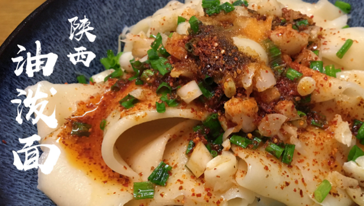

油泼面

油泼面是陕西传统的特色面食之一，起源于明代，有鲜香味、酸辣味、香辣味。
油泼面是一种很普通的面食制作方法，将手工制作的面条在开水中煮熟后捞在碗里，将葱花碎、花椒粉、盐等配料和厚厚一层的辣椒面一起平铺在面上，用烧的滚烫的菜油浇在调料上，顿时热油沸腾，将花椒面、辣椒面烫熟而满碗红光，随后调入适量酱油、香醋即可。也可另外加入腊汁肉、青椒土豆丝、青椒鸡蛋、西红柿鸡蛋等一起食用。
面条是在周代“礼面”的基础上发展演变而来；秦汉时代称之为“汤饼”，属于“煮饼”类中的一种；隋唐时代叫“长命面”，意为下入锅内久煮不断；宋元时代又改称为“水滑面”。据元代韩奕所著《易牙遗意》记载：“水滑面：用十分白面揉搜成剂。一斤作十数块。放在水中，候其面性发得十分满足，逐块抽拽，下汤煮熟。抽拽得阔薄乃好。”清代朝廷大臣薛宝辰在其著作《素食说略》中记载更为详细：“其以水和面，入盐、碱、清油揉匀，复以湿布，俟其融和，扯为细条。煮之，名为桢面。”书中还指出：“作法以陕西朝邑、同州为最佳。”关于桢条面的形状，书中说道：“其薄等于韭菜，其细比于挂面，可以成三棱之形，可以成中空之形。